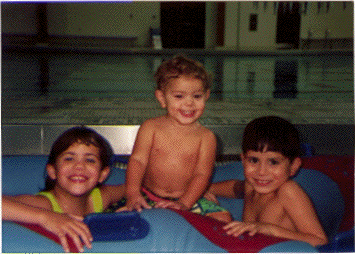

Welcome
I am a Professor of Business Analytics at DePauw University. I was born in Camagüey, Cuba and grew up in Miami, where I graduated from Columbus High in 1978. I earned my BA from New College in 1981 and PhD in Economics from the University of North Carolina at Chapel Hill in 1985. I was at Wabash College for many years, including sabbaticals as a Fulbright Scholar at the Pontificia Universidad Catolica Madre y Maestra in the Dominican Republic in 1991, a year at the University of Costa Rica in 1998, and a voyage around the world with Semester at Sea in the fall of 2005. I have been at DePauw since 2008, with a sabbatical year at RMIT in 2012 in the beautiful city of Melbourne, Australia. My last sabbatical was split between another sail with SAS in Fall 2019 and Malta in the winter of 2020 -- until covid-19 hit and we barely made it home. I hope to travel a third time with Semester at Sea in the fall of 2026.
My curriculum vitae is available here: BarretoCV.pdf. My graduate degree and specialization was in the history of economic thought (making me a living dinosaur in economics), but I much of my career has been focused on teaching economics. I really care about my students and I want to help them understand economics, by which I mean how economists think, manipulate models, and use data. I use Microsoft Excel as a delivery vehicle and many of papers and books are Excel-based implementations of complicated ideas.
In every file, I have tried hard to get it exactly right. I am not original or particularly smart (I'm not being overly modest, I'm just comparing myself to people that I have known, like my cousin, Chato,who languished in a Cuban jail for 16 years and passed the time by playing chess--without a board!). I have, however, developed a knack for taking a mathematically formal model and implementing it in a clear way in Excel. That's what I think is my contribution. I don't do really simple stuff—I like taking something complicated and making it accessible, but that means that sometimes the material is just too hard for some students. I would say, however, that underestimating students is really wasteful and odds are that you will be pleasantly surprised by what your students can accomplish so it is better to shoot too high than too low.
I hope these materials help. Economics remains mired in deep ignorance. (I'm a historian of economics, remember?) There are open problems everywhere and we need people to study economics and figure out how markets work (they really are amazing) and how they can be be improved.
Click the links in the top right corner to explore ny work. Please let me know if you have any questions, suggestions, or corrections.
This photo of my kids is really old, but it brings back nice memories and makes me smile.

Last Updated: 19 July 2025